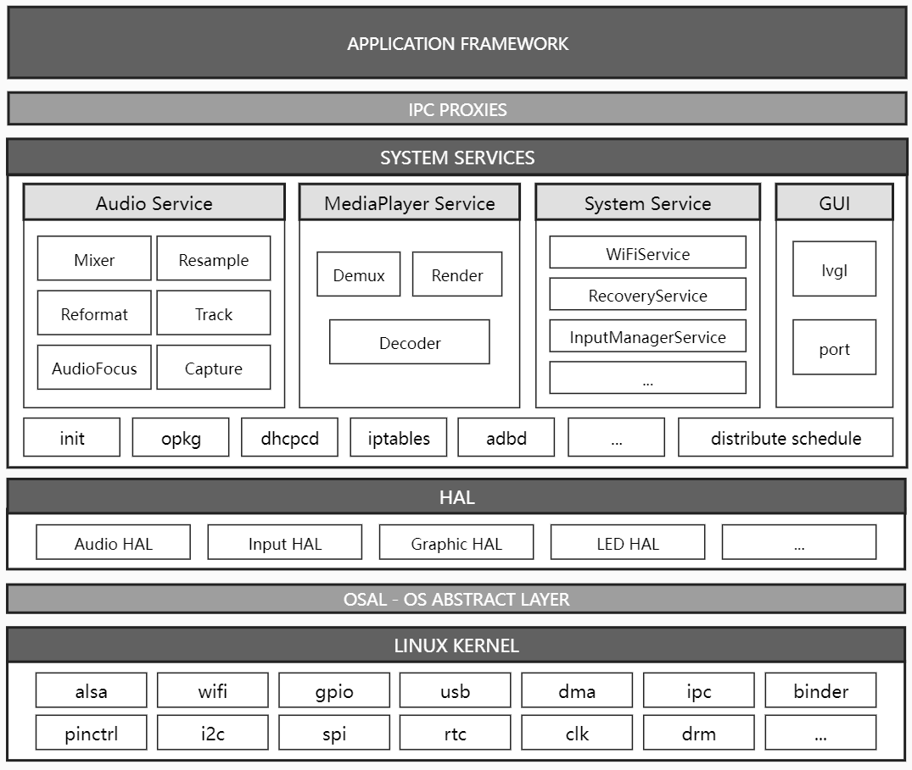

The user space framework architecture of Realtek SDK is shown in the following figure.
Application framework
The application framework is a collection of application level interfaces provided for user to create their own applications.
IPC proxies
The IPC mechanism allows the application framework to cross process boundaries and call into the system services code. This enables high-level framework APIs to interact with system services. With the IPC, application can separate from the system services without knowing underlying details.
System services
System services are modular components such as Audio Services, System Service. Functionality exposed by application framework APIs communicates with system services to access the underlying hardware.
Hardware abstraction layer (HAL)
A HAL defines a standard interface of the hardware, which enables high-level framework to ignore lower-level driver implementations and allows user to implement functionality without modifying the high-level framework.
Linux kernel
The linux kernel and provides all of the hardware drivers such as ALSA, I2C or USB. The drivers interfaces with the underlying hardware and firmware and provide a standard interfaces to HAL and system services.
{kind=link}
